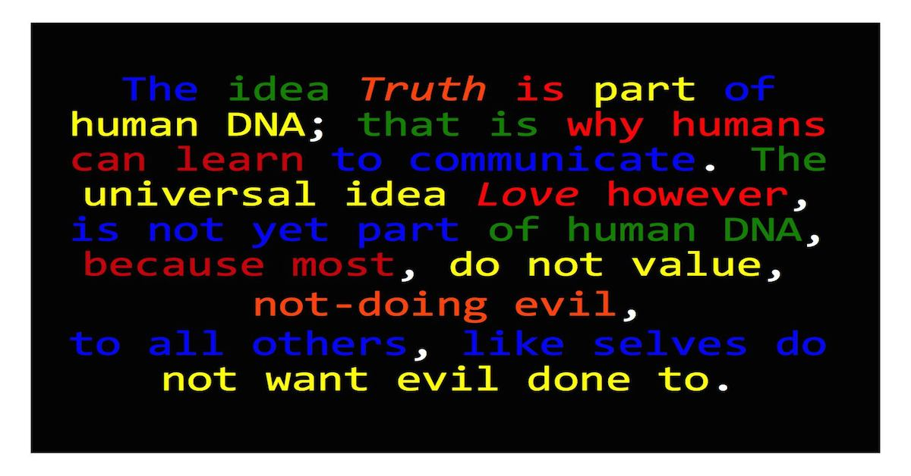

The idea "Messiah/Christ is" is false
∞ ⋈ ∞ ∞ ⋈ ∞ ∞ ⋈ ∞
First published: 10 June 2019
In the Ten Commandments, which is the source of the Law for most people in the West, God commanded not to have idols. The ideas "Messiah" and "Christ" are transgressions of the commandment because it posits the existence of a "Messiah" or a "Christ", which is idolatrous.
Most people do not comprehend why, positing the idea, is a transgression of the Law. First, to comprehend why, a distinction must be made between the idea "Messiah" and the idea "Christ". "Messiah" is a Semitic idea, relating to war. "Christ" is a Greek idea, relating to honesty and probably, peace in self. The Greek word "chrestotes", which means honesty, was one of the root words of "Christ". In the Bible, for example, "Christ" will go to war. St. John's book of Revelation, thus, combines the two ideas because the-honest goes to war. In this article the metaphysical explanation of the ideas, which excludes any anthropomorphic part, is not considered, because the existence of the ideas includes the possibility of an anthropomorphic part, in the singular, therefore the ideas should not exist. The anthropomorphic part of the idea, in singular form, is insanity, because of the weakness of singularity.
The "Messiah" in Semitic religions, for example Judaism and Islam is a person "who frees his" people with war. The idea thus causes war, because currently, there are at least two "Messiahs". One for Judaism and one for Islam. Without the idea there will be less wars. The singularity of the idea in relation to war is false, because, although one person can have a good idea, to win a war, one person cannot win a war. War is inherently a group exercise.
The negativity of the idea "Christ" is currently very relevant. Some posit that only "Christ is" honest. The Bible has the most well known example about the effects of Caiaphas Syndrome. An innocent man was sacrificed, because of the existence of the ideas "Messiah" and "Christ". He posited an idea in his preaching, which was probably regarded a sin, according to the Old Testament commandment, against idolatry. In my comprehension Jesus's preaching was Greek, because he was against war. War is inherently part of the idea "Messiah". Socrates said Apolo was despotic because of Truth, therefore another l was added to the name Apollo, indicating togetherness and Love. Positing the idea, only "Christ is" honest, has a negative effect, because it motivates deceit by all. "Christ is" indicates only one person, therefore all other people must be dishonest, according to idolatrous views. Dishonesty has a negative effect on society. Therefore the idea "Christ is" is against God's law. The only way the idea can be posited within the law is by opposing it to show it's fallaciousness. I think Jesus opposed the singularity/idolatry of the idea "Christ", in line with the Old Testament, and was influenced by Socrates's view about Apollo's name.
Positing the existence of a "Christ" or a "Messiah" in the past, is against the law because it implies the existence of such a person in the future. History repeats. Positing the existence of such a person in the future is also against the law because it, is what started the problem in the first place.
How can the idea be ended? One plan was to state the existence of a "Christ" in the past. It is what Christianity did. The project of theology has been explained as the process of combining polytheism into monotheism. "There is only one God", they often say. This plan did not work, because history repeats. Stating a "Christ" existed in the past, implies the possible existence in the future. That is in, for example, Christianity, a problem. Intelligence and National Security agencies, are discriminating against honest people, because they regard honest people as trouble makers. Generally "the-honest" are isolated from society.
It seems thus the only way to get rid of the ideas "Messiah is" and "Christ is", is to outlaw the positing of the idea, except if the idea is opposed. That means it should be against the law to positively refer to the positive referring of the idea in any book, positing the idea as manifesting, in the future or the past. Books, positing the manifestation of the ideas "Messiah is" or "Christ is", should only be used as examples, to teach how, the ideas in it, negatively affected society. It does not mean the books do not contain other good ideas. Readers thus, should be taught to distinguish between the good and the evil contained in each book.
It has a lot to do with true/false presuppositions. Many Westerners have been indoctrinated with the idea "Messiah is"/"Christ is". If a presupposition, which was indoctrinated, is false, then everything that follows are false. I understand Jesus's message to say the prohibition against idolatry in the Ten Commandments, rejects making an idol of him and anyone else. It was one of the reasons of the split between Roman Catholics and Protestants. Protestants don't make statues of Jesus and Mary. Buddha also rejected idolatry, and eventually main stream Buddhists made an idol of Buddha. With regard to idolatry, it seems the same happened in the cases of Buddha and Jesus.
This raises serious questions about freedom of speech and how it must be regarded in the context. Someone who opposes others, who avoid idolatry, could prioritise freedom of speech, in order to motivate idolatry, and use his/her freedom of speech, to annoy those who oppose idolatry. The solution is territorial division as proposed currently in Divided Party. A canton system can give each belief/conviction a place to be practiced, without being annoyed, at least in direct physical communication.